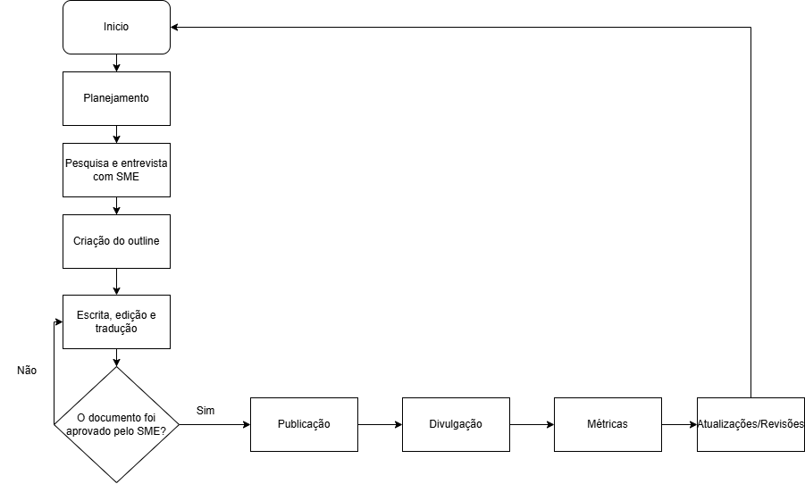

1. Planejamento, pesquisa e entrevista com SME
Esta é a primeira etapa do processo, essencial para que a documentação seja feita com todas as informações necessárias. Os principais passos são:
- Definir o objetivo, a audiência e o escopo da documentação. Caso seja necessário, conversar com stakeholders e alinhar prazos.
- Coleta de informações sobre as features e atualizações que serão lançadas. A pesquisa de informações pode ser feita através de cards no Jira ou diretamente com os times de produto.
- Antes da entrevista com SMEs é importante coletar informações prévias utilizando tickets de suporte/produto, cards anteriores, release notes e documentação existente. A ideia é fazer perguntas específicas sobre a feature e seu impacto.
- Crie algumas perguntas de antemão para enviar ao SME antes da entrevista, para que ele esteja preparado e possa trazer informações mais completas. Este guia detalha como entrevistar um SME: Entrevista com SME: Guia de perguntas
- Após a coleta de informações sobre quais features serão lançadas, são realizadas as entrevistas com os Subject Matter Experts (SMEs).
É importante que as entrevistas sejam gravadas e transcritas para facilitar o acesso à informação durante o desenvolvimento da documentação. Além disso, as gravações permitem que você consiga focar toda a sua atenção para o que está sendo explicado.
2. Criação do outline
Após coletar as informações com os SMEs, é hora de assistir à gravação e conferir suas anotações. Organize as ideias e crie uma estrutura para o documento, definindo quais serão as seções, subseções e parágrafos.
O outline é a estrutura do documento. Ele ajuda na padronização de estilo, voz e tom de acordo com o guia de estilo da empresa. Além disso, agiliza o trabalho de documentação e garante que informações essenciais para o usuário não fiquem de fora da versão final. A ordem da estrutura muda de acordo com o que você quer que o usuário priorize.
3. Escrita, edição e tradução
Na fase de escrita, você coloca as ideias no documento seguindo o que foi definido no outline. É o momento de elaborar o texto com explicações e exemplos, garantindo que as ideias estejam conectadas de forma coesa para que o documento alcance seu objetivo. Caso necessário, pesquise mais sobre o assunto ou consulte outra pessoa com expertise no tema.
Na fase de edição, procure por erros gramaticais, erros de digitação e garanta que as ideias estejam claras e coesas. Foque em facilitar a leitura e a compreensão do usuário. Leia com a perspectiva do leitor para se certificar de que não existam lacunas no texto que impeçam o leitor de atingir o objetivo estabelecido.
Caso a documentação seja publicada em mais de um idioma, crie uma nova versão no idioma desejado. Por exemplo, você pode escrever a documentação em inglês e, após a escrita e a edição, traduzi-la para o português.
4. Feedback/Validação com SME
É importante garantir que o conteúdo esteja fiel ao produto e que os fluxos usados como exemplo estejam funcionando corretamente. Teste a documentação para confirmar se ela tem informações claras e que refletem o fluxo de trabalho exemplificado.
Confirme as informações com o SME para garantir que o conteúdo esteja correto. Caso necessário, faça as alterações com base nos feedbacks recebidos.
Também é importante que outro tech writer faça uma revisão final no seu documento, para garantir uma checagem mais completa.
5. Publicação e divulgação
Transfira o conteúdo de onde ele foi criado (Google Docs, Notion, etc.) para o meio de publicação utilizado (GitBook, GitHub, Document360, wiki interno, etc.).
De acordo com a necessidade ou o objetivo, o documento pode ser publicado a qualquer momento (como um documento de troubleshooting) ou pode seguir a agenda de release estabelecida pelo time de produto, aguardando a data da release (como no caso de uma nova feature ou release note). Alinhe as datas com os stakeholders antes da publicação.
A documentação deve ser fácil de acessar e de atualizar quando necessário.
A divulgação também é importante. Muitos lançamentos se perdem em e-mails e ferramentas de mensagem em meio à grande quantidade de informação. Certifique-se de que seu time e os usuários da documentação saibam quando um material foi atualizado, se tornou obsoleto, ou onde encontrar as documentações disponíveis sobre o produto. Promova o conteúdo nos canais possíveis para maximizar o alcance, e utilize práticas de SEO para garantir que ele seja encontrado com facilidade nas ferramentas de pesquisa.
6. Métricas
Após a publicação, é importante coletar métricas relacionadas à documentação para garantir que ela está alcançando os objetivos desejados e que o usuário está se beneficiando do conteúdo. Fique atento a:
- Feedback de usuários: tanto clientes externos quanto pessoas da empresa que utilizam a documentação.
- Tickets de suporte: o time de Suporte pode receber tickets sobre problemas cuja solução já existe na documentação. Converse com o Suporte para confirmar o acesso ao material, se o texto está claro ou se alguma informação está faltando.
Agende revisões, integre o feedback do usuário e reflita regularmente sobre atualizações de produto/processo.
Também é importante monitorar métricas relacionadas ao processo de documentação em si, por exemplo:
- Métricas sobre documentação: número de documentos publicados, temas e tópicos principais, quantidade de palavras por documento.
- Métricas sobre o tempo de trabalho: tempo gasto na escrita, na revisão, na validação e nas entrevistas com SMEs.
- Métricas de eficiência: taxa de redução de tickets de suporte após a publicação, lead time entre solicitação e publicação, taxa de reaproveitamento de templates/conteúdo.
Documentação técnica não é um projeto com um ponto final, mas um processo contínuo. Cada etapa alimenta a próxima rodada de conteúdo, seja através de um ajuste no outline, uma nova pergunta para o time de produto ou uma atualização motivada por um ticket de suporte. Esse ciclo é o que garante que a documentação continue relevante, precisa e útil à medida que o produto evolui.